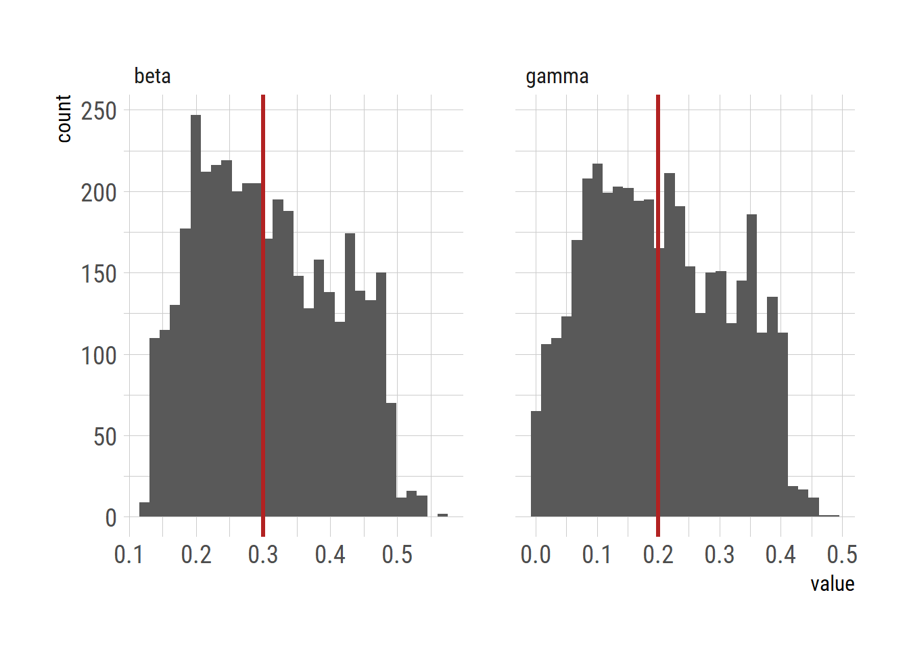

stan_code_data <- "
data {
int<lower=0> N; // length of the data
int<lower=0> iter_per_day;
real dt;
real<lower=0> S0;
real<lower=0> I0;
real<lower=0> R0;
real<lower=0> CI0;
real<lower=0> phi;
real<lower=0> gamma;
real<lower=0> beta;
}
parameters {
}
transformed parameters {
vector<lower=0>[N] daily_inf;
vector<lower=0>[N+1] S;
vector<lower=0>[N+1] I;
vector<lower=0>[N+1] R;
vector<lower=0>[N+1] CI;
real<lower=0> st; // susceptible at time t
real<lower=0> it;
real<lower=0> rt;
real<lower=0> cit; // cumulative infections at time t
real<lower=0> n; // total population size
real<lower=0> n_si; // number moving from S to I
real<lower=0> n_ir; // number moving from I to R
S[1] = S0;
I[1] = I0;
R[1] = R0;
CI[1] = CI0;
for (i in 2:(N+1)) {
st = S[i-1];
it = I[i-1];
rt = R[i-1];
cit = CI[i-1];
for (j in 1:iter_per_day) {
n = st + it + rt;
n_si = dt * beta * st * it / n;
n_ir = dt * gamma * it;
st = st - n_si;
it = it + n_si - n_ir;
rt = rt + n_ir;
cit = cit + n_si;
}
S[i] = st;
I[i] = it;
R[i] = rt;
CI[i] = cit;
}
for (i in 2:(N+1)) {
daily_inf[i-1] = CI[i] - CI[i-1];
}
}
model {
}
generated quantities {
array[N] int y_sim;
for (i in 1:N) {
y_sim[i] = neg_binomial_2_rng(daily_inf[i] + 1e-6, phi);
//y_sim[i] = poisson_rng(daily_inf[i] + 1e-6);
}
}
"SIR model in Stan: Euler method
R
Stan
Euler method
SIR model
SIR model in Stan
I developed a SIR model and solved it an Euler method and generated a fake data as a sequence of noisy observation of daily incidence. I could have used the ODE solving routine available in Stan as in my previous post. However, an SIR model solved via the Euler method can be extended mor easily (e.g., stochatic model). I also suspect it would be easier to combine with the other statistical modeling techinques (e.g., hierarchical model), which I am going to post later.
Simulate the data
Generate \(y_{1:N}\) as a sequence of noisy observations of a daily incidence. Almost the same Stan model is used twice: once to create fake data and the second time to estimate parameters via HMC.
Stan model to create fake data
library(rstan)
options(mc.cores = parallel::detectCores())
rstan_options(auto_write = TRUE)
mod_data <- stan_model(model_code=stan_code_data, verbose=TRUE)
N=31L
S0=999
I0=1
dt=0.1
data = list(N=N,
S0=S0, I0=I0, R0=0, CI0=0, iter_per_day=round(1/dt),
phi=5000, beta=0.3, gamma=0.2, dt=dt)
set.seed(42)
fit = sampling(mod_data, data=data,
iter = 200,
chains = 1,
cores = 1,
algorithm = "Fixed_param")
df = as.data.frame(fit)
y_sim = df[, grepl("^y_sim.*", names(df))]
plot(1:N, as.numeric(y_sim[1,]))
# saveRDS(y_sim, "stan_sir_daily_inc_NB.rds")Stan model to estimate parameters
Note that there are two parameters in the parameters block
stan_code_est <- "
data {
int<lower=0> N;
int<lower=0> iter_per_day;
real dt;
int<lower=0> y[N];
real<lower=0> S0;
real<lower=0> I0;
real<lower=0> R0;
real<lower=0> CI0;
real<lower=0> phi;
real<lower=0> r;
}
parameters {
real<lower=0> gamma;
real<lower=0> beta;
}
transformed parameters {
vector<lower=0>[N] daily_inf;
vector<lower=0>[N+1] S;
vector<lower=0>[N+1] I;
vector<lower=0>[N+1] R;
vector<lower=0>[N+1] CI;
real<lower=0> st; // susceptible at time t
real<lower=0> it;
real<lower=0> rt;
real<lower=0> cit; // cumulative infections at time t
real<lower=0> n; // total population size
real<lower=0> n_si; // number moving from S to I
real<lower=0> n_ir; // number moving from I to R
S[1] = S0;
I[1] = I0;
R[1] = R0;
CI[1] = CI0;
for (i in 2:(N+1)) {
st = S[i-1];
it = I[i-1];
rt = R[i-1];
cit = CI[i-1];
for (j in 1:iter_per_day) {
n = st + it + rt;
n_si = dt * beta * st * it / n;
n_ir = dt * gamma * it;
st = st - n_si;
it = it + n_si - n_ir;
rt = rt + n_ir;
cit = cit + n_si;
}
S[i] = st;
I[i] = it;
R[i] = rt;
CI[i] = cit;
}
for (i in 2:(N+1)) {
daily_inf[i-1] = CI[i] - CI[i-1];
}
}
model {
beta ~ exponential(r);
gamma ~ exponential(r);
y ~ neg_binomial_2(daily_inf + 1e-6, phi);
}"library(rstan)
options(mc.cores = parallel::detectCores())
rstan_options(auto_write = TRUE)
mod_est = stan_model(model_code=stan_code_est, verbose=TRUE)
y_sim = readRDS("stan_sir_daily_inc_NB.rds")
y = as.integer(y_sim[1,])
data = list(N=length(y), y=y, S0=S0, I0=I0, R0=0, CI0=0, iter_per_day=round(1/dt), phi=50, r=0.1, dt=dt)
set.seed(42)
fit = sampling(mod_est, data=data,
iter = 2000,
chains = 4,
cores = min(parallel::detectCores(), 4))
# saveRDS(fit, "stan_sir_daily_inc_NB_fit.rds")Trace plot
library(rstan)
fit = readRDS("stan_sir_daily_inc_NB_fit.rds")
traceplot(fit, c("beta","gamma"))Plot the results
library(ggplot2)
extrafont::loadfonts("win", quiet=TRUE)
theme_set(hrbrthemes::theme_ipsum_rc(base_size=14, subtitle_size=16, axis_title_size=12))
df = as.data.frame(fit)
d <- df[, c("beta","gamma")]
dlong <- tidyr::pivot_longer(d, cols=c("beta","gamma"),
names_to="param")
# dlong$param <- as.factor(dlong$param)
library(dplyr)
ggplot(dlong)+
geom_histogram(aes(x=value))+
facet_wrap(~param, nrow=1, scales = "free_x")+
geom_vline(data=filter(dlong, param =="beta"), aes(xintercept=0.3), color="firebrick", linewidth=1.2) +
geom_vline(data=filter(dlong, param =="gamma"), aes(xintercept=0.2), color="firebrick", linewidth=1.2)
# ggsave("sir_euler_stan_param.png", gg, units="in", width=3.4*2, height=2.7*2)